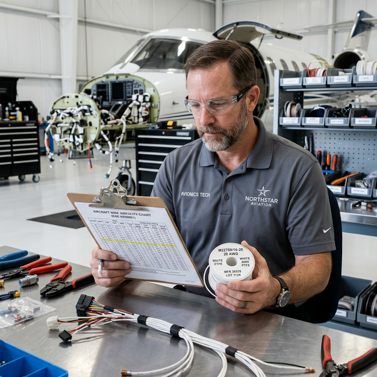

Wire gauge sizing
Module Objectives
- Interpret the AWG numbering system regarding physical conductor size.
- List the three primary factors used to strictly determine the correct wire gauge for a circuit.
- Explain the physical rationale for temperature de-rating.
Why Does This Matter?

A technician grabs a spool of 22 AWG wire to install a new high-intensity LED landing light circuit that draws 10 amps. The wire is rated for only 5 amps continuous. During a night flight, the wire begins to rapidly overheat, the insulation softens and smokes, and an electrical fire initiates behind the panel. Conversely, using massive 10 AWG wire for a circuit that draws 1 amp adds completely unnecessary weight, degrading aircraft performance. Wire gauge selection is a strict engineering decision — never a visual guess.
What You Need To Know
American Wire Gauge (AWG)
The AWG system designates the physical size of the metallic conductor. The numbering is inverted — higher AWG numbers mean physically smaller wire:
- 22 AWG & 24 AWG — Small conductors, exclusively used for extremely low-current digital signal wiring and databuses.
- 20 AWG & 18 AWG — Medium conductors, the most common sizing for standard avionics equipment power feeds.
- 14 AWG & 12 AWG — Larger conductors, used for high-current loads like landing lights or pitot heat.
- 10 AWG & 8 AWG — Massive conductors, used for primary high-current bus feeders linking alternators to the main bus.
Selecting the Correct Gauge (The Three Factors)
Correct wire gauge is determined by consulting the aircraft wire load analysis and calculating against the manufacturer's ampacity tables (found in AC 43.13-1B). You must synthesize three factors:
- 1. Circuit Current Draw (Amps) — The wire must be physically large enough to carry the required load continuously without overheating.
- 2. Wire Run Length — Every foot of wire adds resistance. Longer runs create more voltage drop. A 20-foot run might require jumping up to 18 AWG to deliver 28V to the tail, even if 20 AWG could handle the current safely.
- 3. Installation Temperature (De-rating) — As ambient air temperature increases (like near the engine), the wire's ability to safely dissipate its own heat decreases. Therefore, its allowable current capacity must be mathematically reduced (de-rated).
The Consequences
- Undersized wire (too high AWG number) → Restricts current → Creates intense resistive heating → Damages insulation → Electrical fire risk.
- Oversized wire (too low AWG number) → Carries the current effortlessly → Adds massive unnecessary weight across a 50-foot run → Reduces aircraft useful load.
- Correct sizing is an engineering balancing act between absolute thermal safety and weight efficiency.
System Visualization
graph TD
A[Need to select wire for new load] --> B[Identify Load: 8 Amps Continuous]
B --> C[Determine Wire Run Length: 15 feet]
C --> D[Determine Ambient Temp: 100 F]
D --> E[Consult AC 43.13 Ampacity Chart]
E -->|Calculate Voltage Drop constraint| F[Requires 18 AWG minimum]
E -->|Apply Temperature De-rating| G[Requires 16 AWG to be safe]
F --> H[Select the LARGEST indicated wire]
G --> H
H --> I[Final Selection: 16 AWG]
style E fill:#1e40af,stroke:#1e3a8a,stroke-width:2px,color:#fff
style I fill:#166534,stroke:#14532d,stroke-width:2px,color:#fff
On The Job
Never assume a wire gauge is correct just because it "looks thick enough." Check the installation manual for the specific equipment's current draw. Consult the AC 43.13 ampacity table for the specific wire formulation, factor in the total run length to ensure voltage drop stays below 0.5V, and de-rate the capacity if routing the bundle through warm structural areas. The engineering load analysis document proves this for each circuit before sign-off.
Reference Terms
Wire Gauge Selection
Correct wire gauge selection requires consulting the wire load analysis and manufacturer's ampacity tables, considering: circuit current draw, wire run length (voltage drop), and installation temperature environment — not just the current rating alone.
American Wire Gauge (AWG)
The American Wire Gauge (AWG) system designates conductor size: larger AWG numbers = smaller wire diameters. Common avionics sizes: 22 AWG (signal), 20 AWG (medium current), 16 AWG (higher current). A 22 AWG wire is smaller than a 16 AWG wire.
AWG (American Wire Gauge)
The standard wire physical sizing system; higher numbers equal smaller wire diameters.
Ampacity
The absolute maximum current a specific wire can safely carry continuously without thermally degrading its insulation.
De-rating
The required mathematical reduction of a wire's allowable current capacity based on elevated ambient temperatures or bundling multiple hot wires together.
Assessment Check
Higher AWG numbers mean smaller wires; you must select gauge using strict ampacity tables that account for continuous current draw, total run length, and thermal de-rating. --- ---